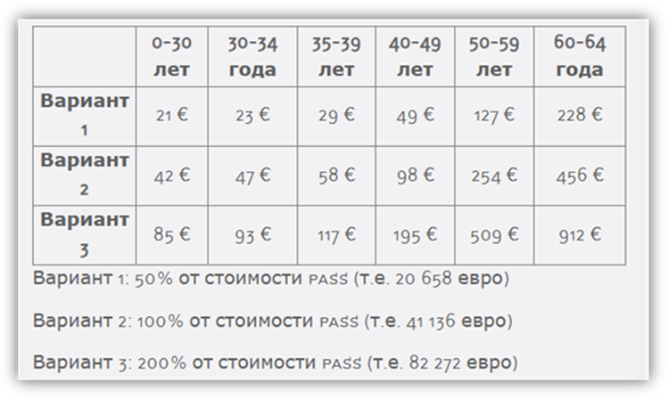

2 ВОПРОСЫ КАДРОВОГО ОБЕСПЕЧЕНИЯ НАУЧНЫХ ИССЛЕДОВАНИЙ И РАЗРАБОТОК
2.1 Анализ международного опыта по предоставлению социальных льгот для ученых
Цель изучение состоит в выявлении общих и специфических особенностей социальных льгот, предоставляемых ученым в странах с новоиндустриализированными экономиками. Основная задача заключается в анализе мировых практик предоставления этих льгот и разработке рекомендаций, адаптированных к условиям Казахстана. Исследование направлено на определение наиболее эффективных методов поддержки научных кадров, чтобы улучшить систему социального обеспечения научных работников и стимулировать научную деятельность в стране.
Актуальность темы. В условиях глобализации и активного развития науки, роль ученых в социально-экономическом прогрессе страны становится все более значимой. Социальные льготы могут послужить инструментом стимулирования научной деятельности, повышения эффективности исследований и привлечения выдающихся ученых. В отчете акцентируется внимание на основных мерах, применяемых различными государствами для поддержки высококвалифицированных специалистов, вовлеченных в миграционные процессы. Исследование включает сравнительный анализ стратегий развивающихся стран, государств Европы, Азии, Африки и Латинской Америки. Выявляются успешные методы и анализируются критические ошибки в этой сфере.
Методология изучения. Исследование предлагает комплексный анализ методов, с помощью которых государства стимулируют и поддерживают научные кадры, предоставляя им социальные льготы. Работа проходила в несколько этапов: сбор данных из разных источников (официальных документов, отчетов, научных исследований и статистической информации), их систематизация и классификация. Цель исследования — выявить общие и специфические особенности социальных льгот в различных странах. На основе анализа лучших мировых практик сформулированы рекомендации, адаптированные к условиям Казахстана. В заключение изложены выводы, направленные на улучшение системы социального обеспечения научных работников.
2.1.1 Обзор международного опыта
Обоснование выбора стран для анализа
Для изучения международного опыта в предоставлении социальных льгот и преимуществ ученым, мы планируем провести анализ десяти стран с новоиндустриализованными экономиками. К таким странам часто относятся Бразилия, Россия, Индия, Китай, Южная Африка, а также такие страны, как Малайзия, Мексика, Филиппины, Турция и Таиланд [1]. Эти государства отличаются динамичным экономическим ростом, интенсивной индустриализацией и успешным преобразованием от преимущественно аграрных экономик к индустриальным экономикам и экономикам основанных на знаниях [2]. Свойственный им путь развития, отмеченный специфическими национальными особенностями, делает их опыт чрезвычайно ценным для изучения. Во многих из этих стран особое внимание уделяется инвестициям в образование и науку.
Например, Китай значительно увеличил финансирование исследований и разработок, стремясь стать мировым лидером в области инноваций [3]. Такая активная поддержка науки выражается не только в прямых инвестициях, но и в предоставлении различных преференции и льгот исследователем и ученым в этих странах. Опыт этих стран в построении успешной научной экосистемы может служить примером для других государств, ищущих эффективные методы поддержки научных исследований [4]. Также в анализ добавлены единичные кейсы таких развитых стран как США, Великобритания и Франция.
В контексте Казахстана, который активно развивает свою научнообразовательную и инновационную базу, опыт ново индустриализованных экономик может предложить ряд ценных стратегий и подходов. Учет культурных, социальных и экономических особенностей каждой из этих стран позволит адаптировать лучшие практики под специфические условия Казахстана.
Обзор системы социальных льгот
Современный экономический словарь определяет льготы как предоставление кому-либо преимуществ, частичное освобождение от выполнения установленных правил, обязанностей или облегчение условия их выполнения.
Социальная льгота — дополнительное право, предоставляемое определённым категориям граждан, семьям или домохозяйствам для поддержания их приемлемого уровня жизни с помощью освобождения их от каких-либо обязательных платежей или обязанностей, или путём социальных выплат; вид социальной защиты населения.
Социальные льготы для ученых имеют цель – поощрить труд ученых, облегчить условия их работы и создать благоприятную среду для научных исследований и инноваций. Эти льготы включают различные виды поддержки, которые могут быть предоставлены как государством, так и другими организациями. К социальным льготам можно отнести:
Оплата труда и доплаты. Научные работники в Казахстане получают заработную плату в соответствии с государственными стандартами и нормативами, установленные действующем законадательством. Это включает как основную заработную плату, так и дополнительные стимулирующие выплаты. Для научных сотрудников с учеными степенями предусмотрены дополнительные ежемесячные доплаты, финансируемые из государственного бюджета, что является важным фактором стимулирования их профессионального роста.
Отпуска и условия работы. Научным работникам гарантировано право на ежегодный оплачиваемый отпуск. Продолжительность отпуска зависит от ученой степени и продолжительности научной деятельности, что является частью системы социальных льгот. Также предусмотрены возможности для прохождения стажировок, повышения квалификации и участия в научных конференциях, что способствует профессиональному развитию и обмену знаниями.
Меры социальной защиты. Научные работники имеют право на получение жилья и земельных участков для строительства, что значительно улучшает их жизненные условия. Обеспечивается качественное медицинское обслуживание, включая специальные программы здравоохранения для научных сотрудников и их семей, что повышает уровень социальной защиты.
Поощрение и награды. Научные работники могут быть выдвинуты на соискание Государственной премии и других государственных наград, а также получать научные стипендии, что стимулирует их к новым исследованиям и открытиям. Для молодых талантливых ученых предусмотрены специальные стипендии, что способствует привлечению новых кадров в научную сферу и поддержке молодых специалистов.
Подготовка и переподготовка кадров. Научные учреждения и университеты активно занимаются подготовкой и переподготовкой научно-технических кадров, что обеспечивает постоянное обновление знаний и технологий в научной сфере. Это включает в себя разнообразные образовательные программы, курсы повышения квалификации и международное сотрудничество, что способствует интеграции Казахстана в мировое научное сообщество.
Изучив предлагаемые социальные льготы разными странами для своих ученых можно констатировать, что одним из основополагающих является финансовая поддержка. Она может заключаться в выделении грантов или стипендий, которые позволяют ученым сконцентрироваться на исследовательской работе без необходимости поиска финансовых средств. Финансовая поддержка может использоваться для покупки оборудования, проведения экспериментов, оплаты командировок на конференции и других профессиональных мероприятий.
Многие организации предоставляют ученым возможность пользоваться лабораториями и другими исследовательскими учреждениями, которые могут быть слишком дорогими для отдельных исследователей. Это обеспечивает доступ к необходимым ресурсам и инфраструктуре, способствуя эффективному осуществлению научных изысканий.
Другие социальные льготы могут включать доступ к базам данных и научной литературе, расширение сети контактов с коллегами и специалистами в своей области, а также возможность принимать участие в научных конференциях и симпозиумах. Эти льготы помогают ученым расширить свое научное общение и совместную работу, что способствует развитию науки и инноваций.
Кроме того, социальные льготы могут включать поддержку в оформлении патентов и коммерциализации научных исследований. Юридическая и консультационная помощь в процессе патентной регистрации и привлечении инвестиций для коммерциализации разработок частая практика в развивающихся странах.
В целом, социальные льготы для ученых способствуют повышению эффективности и удовлетворенности их трудом, создают подходящие условия для научных исследований и разработок, а также помогают им в достижении своих карьерных и научных целей.
2.1.2 Сравнительный анализ
Анализ опыта Бразилии
Бразилия активно работает над поддержкой бразильской научной диаспоры и развитием международного академического сотрудничества. В качестве ключевых инструментов были запущены программы «Наука без границ» (Ciencia sem Fronteiras), «Национальная программа постдокторантуры» (Programa Nacional de Pos Doutorado) [6] и инициативы под эгидой «Национального совета по-научному и технологическому развитию» (Conselho Nacional de Desenvolvimento Científico e Tecnológico). В рамках этих программ и инициатив успешно налаживались связи с ведущими учебными заведениями мира и стимулировался приток научных кадров в страну. Двигателями научных исследований и патентной активности стали инновационные центры и научные парки.
Анализ опыта Российской Федерации
Российская Федерация (РФ) предоставляет ряд социальных льгот для своих ученых. Российские ученые могут претендовать на государственные гранты и стипендии для поддержки своих научных исследований. Программы РФФИ (Российский фонд фундаментальных исследований) являются одними из основных источников финансирования научных исследований в России. Ученые могут подавать заявки на конкурсные гранты для осуществления фундаментальных и прикладных исследований [7]. Министерство образования и науки РФ также предоставляет различные гранты и финансовую поддержку для ученых в рамках национальных научных программ.
Существуют программы, направленные на поддержку молодых ученых и студентов, включая стипендии, конкурсы и мероприятия по развитию научных навыков. Ученые могут иметь определенные льготы в области налогообложения в зависимости от их научной деятельности и статуса. Медицинское обслуживание и страхование предоставляются национальными медицинскими программами для ученых и их семей.
Инициатива «5-100», начатая в 2013 году, была направлена на то, чтобы к 2020 году как минимум пять российских университетов вошли в число 100 лучших исследовательских университетов мира [8]. Программа привела к увеличению финансирования и международному сотрудничеству выбранных пяти университетов. Вопреки амбициозным целям, результаты оказались неоднозначными, однако нельзя отрицать, что эта инициатива стимулировала усилия по улучшению глобального академического статуса России [9].
Еще один важный проект – программа «Мегагранты», стартовавшая в 2010 году [10]. Она предоставила значительное финансирование – до 150 миллионов рублей в течение трех лет – ученым с мировым именем, желающим работать в России и возглавить новые лаборатории. [11] Акцент был сделан на передовые научные направления. Программа успешно привлекла в страну ведущих исследователей, многие из которых были выходцами из России [12]
Анализ опыта Индии
Индия предоставляет различные социальные льготы для своих ученых, чтобы поддерживать их научные исследования и обеспечивать благоприятные условия для развития научного сообщества. Ученые в Индии могут претендовать на различные государственные гранты и стипендии для поддержки своих научных исследований. Например, Индийский национальный научный фонд предоставляет множество узконаправленных стипендий для ученых. [13] Программы Индийского Совета по Научным исследованиям предлагает ряд программ для поддержки научных исследований, включая гранты, стипендии и программы обучения. Индия реализует программу «Научные дорожные карты», которая предоставляет поддержку для ученых, возвращающихся в страну после пребывания за рубежом. Также, ученые могут получать льготы в области образования для своих детей, такие как скидки на образовательные сборы. Многие институты и организации предоставляют ученым доступ к медицинскому обслуживанию и страхованию.
«Стипендия в честь Рамануджана»: Этот грант, названный в честь выдающегося индийского математика Шриниваса Рамануджана, приглашает лучших мировых ученых и инженеров мира для проведения исследований в Индии, предоставляя им полную научную автономию без административных обязательств. [14]
«Премия для молодых инноваторов в области биотехнологии (IYBA)»:
данный проект призван идентифицировать и поддерживать молодых ученых с новаторскими идеями в биотехнологии. [15]
Анализ опыта Китая
За последние несколько десятилетий Китай приступил к осуществлению амбициозных программ по развитию ученного потенциала страны. [16] Одной из ключевых программ является «План тысячи талантов» [17], программа, запущенная в 2008 году, предусматривала привлекательные условия: конкурентоспособная зарплата, финансирование исследований, а в некоторых случаях – проживание и обучение для детей ученых.
Еще одной заметной инициативой является «Программа стипендиатов Чанцзяна», в рамках которой финансируются должности выдающихся профессоров, приглашенных профессоров и молодых ученых в китайских университетах [18]. Создание исследовательских лабораторий мирового класса, партнерство с международными институтами и увеличение финансирования проектов НИОКР создали среду, благоприятствующую передовым исследованиям [19]. Также стоит отметить программы, такие как, выделение грантов от Национального Естественно-Научного Фонда Китая, программа «Яньцзы» предназначенная для привлечения иностранных и китайских экспертов высокого уровня для работы в китайских университетах, программа фонда науки и технологии провинции и города «973» (National Basic Research Program), где различные китайские провинции и города могут предоставлять свои собственные программы финансирования и поддержки для ученых, работающих в этих регионах.
Анализ опыта Мексики
В Мексике существуют различные программы и меры поддержки для ученых и исследователей. Посредством разнообразных образовательных и исследовательских инициатив страна пытается позиционировать себя как академический центр Латинской Америки [20].
Ключевым аспектом является Национальный совет по науке и технологиям (CONACYT) [21], учредивший многочисленные стипендии и гранты для мексиканцев. Эти стипендии часто покрывают плату за обучение, медицинскую страховку и стипендии на проживание в аспирантуре в ведущих университетах мира [22]. Существуют программы, направленные на поддержку молодых ученых и студентов, включая стипендии и гранты.
Программа «Cátedras CONACYT» — это еще одна попытка, направленная на интеграцию высококвалифицированных исследователей в мексиканские учреждения, содействие исследованиям и технологическому развитию [23].
Программа «Sistema Nacional de Investigadores» — это система, предназначенная для оценки и признания научных достижений ученых. Отличившимся в этой программе могут предоставить дополнительные льготы и привилегии [24].
Анализ опыта Южной Африки
Южная Африка также, как и Мексика позиционирует себя как академический центр своего региона. Чтобы закрепить этот статус, правительство активно внедряет ряд инициатив, связанных с различными социальными льготами и стратегиями для ученых [25].
Инициатива южноафриканских исследовательских кафедр (SARChI) была запущена в 2006 году Министерством науки и технологий и управляется Национальным исследовательским фондом. Целью этой инициативы является привлечение и сохранение передового опыта в области исследований и инноваций в государственных университетах Южной Африки [26].
«Программа будущих профессоров», запущенная в 2019 году, направлена на продвижение и назначение чернокожих и женщин ученых на профессорские должности. Программа обеспечивает целевую поддержку в течение 24 месяцев, включая международное трудоустройство и обучение лидерству [27].
«Инструмент финансирования Thuthuka» – эта программа ориентирована на начинающих исследователей, она помогает им повысить результативность исследований и улучшить их право на получение рейтинга в национальном исследовательском фонде. В программе также предусмотрены условия для исследователей, которые ранее находились в неблагоприятном положении или имели ограниченный доступ к исследовательским учреждениям [28].
Программа «Centre of Excellence» – так называемые центры отличия поддерживают научные исследования в передовых областях. Ученые могут стать частью таких центров и получать финансовую поддержку на свои исследования [29].
Анализ опыта Турции
Турция имеет богатую академическую и культурную историю и на протяжении веков была центром знаний и науки [30]. В целях развития и поощрения ученых предусмотрено выделение средств в размере до 720 000 лир (95 000 долларов США). Эта инициатива является частью программы «Международные лидеры-исследователи» под руководством Научнотехнологического совета Турции (TÜBITAK), которая нацелена на сокращение зависимости от импорта промышленных товаров и поощрение национальных инноваций и исследований и разработок.
В рамках программы «Национальные лидеры исследований» в настоящее время поддержку получают 42 ученых. Цель программы — привлечь не менее 100 молодых исследователей. Предлагаемые льготы включают гранты, финансовую поддержку расходов на проживание и медицинскую страховку [31].
Анализ опыта Таиланда
Таиландский Национальный Исследовательский Совет предоставляет гранты и финансовую поддержку для научных исследований. Программа «Research and Researchers for Industries» направлена на поддержку исследований, которые могут быть внедрены в промышленность. Ученым могут предоставляться льготы в образовании и страховании для их семей.
«Таиландский научный парк» — крупнейший в стране центр исследований и разработок, свидетельствующий о приверженности Таиланда к науке и технологиям. Предлагая самые современные возможности и способствуя сотрудничеству между промышленностью и научными кругами, научный парк стремится привлечь таланты не только внутри страны, но и ученых со всего мира [33].
«Программа PhD Королевского золотого юбилея» предоставляет тайским студентам стипендии для продолжения обучения в докторантуре как на местном, так и на международном уровне. Условием для тех, кто учится за границей, является возвращение и работа в Таиланде, что гарантирует возврат инвестиций в их образование. Главной задачей второй фазы этой программы является подготовка 20000 PhD исследователей и 20000 публикаций [34].
С образованием Экономического сообщества АСЕАН Таиланд зарекомендовал себя как академический и экономический центр региона.[35] Содействуя региональной интеграции и связям, Таиланд стремится привлечь ученых, заинтересованных в региональном сотрудничестве и исследованиях Юго-Восточной Азии [36].
Анализ опыта Малайзии
«Премия «Звезда исследований Малайзии» – эта программа, контролируемая Министерством образования, признает и вознаграждает выдающиеся исследования малайзийских авторов [37]. Малайзия определила несколько университетов в качестве исследовательских, с целью вывести их в ряды ведущих учебных заведений мира. Концепция исследовательских университетов, таких как Университет Малайи и Университет Сайнс Малайзия, заключается в том, что, они получают дополнительное финансирование и автономию в своем управлении, тем самым привлекая глобальные и местные таланты [38].
Также стоит отметить и программу «возвращающихся экспертов», управляемая Talent Corporation, эта инициатива предоставляет ряд возможностей для малайзийских ученых, работающих за границей, вернуться домой. Преимущества включают налоговые льготы, простоту приобретения недвижимости и другие меры содействия, призванные сделать возвращение более плавным [39].
Анализ опыта Филиппин
Созданная Департаментом науки и технологий «Программа ученых Балика» предоставляет филиппинским ученым, технологам и экспертам различного рода льготы в виде стипендий и финансирования [40].
Фонд Образования и Фонд Филиппинских Исследований предоставляют гранты и стипендии для поддержки ученых и исследовательских проектов. Благодаря партнерству с международными учреждениями такие программы, как стипендии PhD CHEDNewton, предлагают филиппинским ученым возможность учиться за границей с ожиданием, что впоследствии они поделятся своим опытом дома.
«Филиппинско-Калифорнийские институты перспективных исследований» (PCARI). Эта инициатива представляет собой сотрудничество между Филиппинами и ведущими исследовательскими университетами Калифорнии. В рамках инициативы финансируются исследовательские проекты и обучение, наращивается потенциал на Филиппинах и обеспечивается передача знаний и технологий [41].
2.1.3 Анализ влияния социальных льгот на научное сообщество
Прямые выплаты за публикационную деятельность
В Китае наблюдается значительный рост денежных вознаграждений для исследователей, чьи работы публикуются в зарубежных журналах, особенно в журналах с высоким импакт-фактором. Например, ученые получали более 160 000 долларов США за статьи в престижных западных журналах. Исследование 100 ведущих университетов Китая показало, что денежные вознаграждения за публикации являются обычной практикой, причем суммы варьируются от 30 000 до 165 000 долларов США за статью в зависимости от импакт-фактора журнала. Самые высокие выплаты были за публикации в журналах, таких как «Science» и «Nature», среднее вознаграждение в 2016 году составило 44 000 долларов США, а максимальное достигло 165 000 долларов США. Важно отметить, что не все авторы статьи могут претендовать на эти вознаграждения, и в большинстве случаев они присуждаются только первому автору или первому автору, который также является корреспондирующим автором. Также заметна тенденция, что университеты более низкого ранга в Китае могут платить больше, чем университеты высшего ранга, за такие публикации [42][43][44].
Субсидии по жилью
В России для академического персонала предлагаются различные льготы, такие как субсидии на жилье и предпочтительные ставки ипотеки. Особенно это актуально в рамках программ, направленных на привлечение ведущих ученых и исследователей в российские университеты. Например, государственная программа «Мегагранты», направленная на привлечение ведущих ученых мира в российские университеты, предлагает не только существенные финансовые гранты на исследования, но и дополнительные льготы, включая жилищные субсидии [45][46]. Малайзийские университеты и государственные научные организации часто предоставляют жилищные пособия или субсидированное жилье в университетских городках. Также доступны гранты на поездки на конференции и профессиональное развитие.
Поддержка участия ученых в международных конференциях
В рамках своих научных и исследовательских программ, Таиланд и Турция активно поддерживают участие своих ученых в международных конференциях, обеспечивая необходимые ресурсы и финансовую поддержку. В Таиланде Национальное агентство по развитию науки и технологий (NSTDA) включает в свои программы финансирования статьи, предусматривающие путешествия и участие в конференциях. Это направлено на поощрение международного академического взаимодействия, позволяя тайским ученым активно участвовать в международных научных форумах, обмениваться знаниями и налаживать сотрудничество с коллегами со всего мира. Предоставляемая поддержка охватывает расходы на поездку, регистрацию и проживание на время конференции.
В Турции Научно-технологический исследовательский совет (TÜBİTAK) поддерживает ученых в посещении международных конференций, покрывая расходы на путешествие, регистрацию и проживание. Это включает финансирование поездок на важные научные собрания и предоставление необходимых ресурсов для полноценного участия в этих мероприятиях. Подобная поддержка способствует расширению научного горизонта турецких исследователей, позволяя им презентовать свои работы на международной арене и устанавливать профессиональные контакты, что важно для развития науки в стране [47].
Финансовое Преимущество Академии
В Бразилии профессора университетов, особенно в государственных учебных заведениях, обычно получают зарплату, значительно превышающую среднюю по стране. В Китае зарплаты ученых выше медианы, особенно в известных университетах и по популярным специальностям. В Индии преподаватели престижных учебных заведений также зарабатывают выше среднего по стране, включая разнообразные бонусы и привилегии. В России, в частности в больших городах и среди признанных исследователей, академические зарплаты обычно превышают средний уровень по стране. В Малайзии профессионалы в академической сфере, особенно с высшими квалификациями и на руководящих должностях, обычно получают зарплату, превышающую среднюю по стране.
В Мексике ученые, особенно те, кто имеет значительные исследовательские достижения или работает в хорошо финансируемых учреждениях, также могут ожидать зарплату выше среднего уровня. На Филиппинах университетские преподаватели, в особенности в известных учебных заведениях, также зарабатывают выше среднего. В Южной Африке зарплаты в академической сфере могут варьироваться, но старшие академики и исследователи в крупных университетах часто получают зарплату выше средней. В Таиланде ученые, особенно в государственных университетах и на старших должностях, также часто получают зарплату выше среднего национального уровня.
Частные кейсы развитых стран
Кейс -1 Софинансирование пенсионных программ
В Соединенных Штатах Америки, Великобритании, Германии и Японии существует ряд механизмов софинансирования пенсионных программ. В США многие университеты включая Гарвард и Стэнфорд предлагают комплексные пенсионные программы, включая 403(b) планы, которые аналогичны 401(k) для некоммерческих организаций. В Великобритании университеты, такие как Оксфорд и Кембридж, участвуют в Университетской Пенсионной Схеме (Universities Superannuation Scheme, USS), которая является одной из крупнейших корпоративных пенсионных схем в Великобритании. В Германии научные работники в учреждениях, таких как Общество Макса Планка, подлежат обязательному государственному пенсионному страхованию, которое обеспечивает финансовую поддержку после выхода на пенсию. В Японии же университеты, включая Токийский университет, предлагают пенсионные программы в рамках национальной пенсионной системы, которая включает как государственные, но и дополняется частными пенсионными планами.
На данный момент потенциал внедрения механизмов в Казахстане ожидается низким. С заработной платы уже удерживается 10% пенсионных отчислений. Предполагается, что эти отчисления обеспечат адекватный уровень жизни после выхода ученого на пенсию. Соответственно, необходимость в дополнительных программах невысока. В то время как такого рода льготы являются действенным инструментом в развитых странах, они вряд ли сработают в контексте развивающихся стран. Психологически отложенная на будущее выгода может не восприниматься учеными как серьезное преимущество.
На опыте Соединенных Штатов Америки выделяются следующие инструменты по предоставлению пенсионных льгот:
Опыт поэтапного выхода на пенсию — данная программа позволяет определенным сотрудникам, которые уже соответствуют возрастным и служебным требованиям, выбрать выход на пенсию, продолжая работать неполный рабочий день. Это возможность наставничества для молодых ученых от опытных для подготовки следующего поколения исследователей. Выход на поэтапный выход на пенсию является строго добровольным и требует взаимного согласия между работником и работодателем. Например, Университет Аляски вносит 7,65% от зарплаты сотрудника, имеющего на это право, до базовой заработной платы в размере USD 52 000. Максимальный взнос за календарный год – USD 3978.
Участвовать в программе поэтапного выхода на пенсию может физическое лицо, трудоустроенное на постоянной основе в течение 3-летнего периода, предшествующего дате выхода на поэтапную пенсию.
Право на поэтапный выход на пенсию варьируется в зависимости от сотрудников, на которых распространяется действие пенсионной системы государственных служащих (CSRS) и системы пенсионного обеспечения федеральных служащих (FERS). [48]
Система FACES: безопасная система, предназначенная для консультантов по пенсиям, для расчета оценок для сотрудников, подпадающих под Гражданскую службу пенсионной системы (CSRS) и Федеральную систему пенсионных сбережений сотрудников (FERS).
Критерии для участия – стаж работы и достижение определенного возраста представлены в Таблица 2.1.1, примеры представлены в Таблица 2.1.2 и Таблица 2.1.3.
Таблица 2.1.1. Критерии для участия в программе поэтапного выхода на пенсию
|
Вид пенсионной системы |
Стаж работы |
Возраст |
|
Сотрудники CSRS (гос. служащие) |
30 лет |
55 лет |
|
20 лет |
60 лет |
|
|
Сотрудники FERS (фед.служащие) |
30 лет |
от 55 до 57 лет |
|
20 лет |
60 лет |
Таблица 2.1.2. Пример к сотруднику CSRS со стажем работы 35 лет и 9 месяцев [48]
|
Поэтапный пенсионный доход CSRS |
|
|
|
|
Ежегодно |
Ежемесячно |
|
Текущая зарплата USD 68 275 X 50% |
USD 34 137 |
USD 2 844.75 |
|
Текущий годовой аннуитет USD 45 296.30 X 50% |
USD 22 648 |
USD 1 887.00 |
|
Общий доход при поэтапном выходе на пенсию |
USD 56 785 |
USD 4 731.75 |
Таблица 2.1.3. Пример сотрудника FERS со стажем 35 лет и 9 месяцев [48]
|
Поэтапный пенсионный доход FERS |
|
|
|
|
Ежегодно |
Ежемесячно |
|
Текущая зарплата USD 68 275 X 50% |
USD 34 137 |
USD 2 844.75 |
|
Текущий годовой аннуитет USD 23 868 X 50% |
USD 11 934 |
USD 994.50 |
|
Общий доход при поэтапном выходе на пенсию |
USD 46 071 |
USD 3 838.75 |
Federal Ballpark Estimate®: инструмент для планирования сбережений, позволяющий автоматически рассчитывать будущие пенсионные выплаты CSRS или FERS.
Федеральный закон об исправлении ошибок в пенсионном обеспечении
Калькулятор зарплаты по генеральному графику (GS): для определения ставки зарплаты GS по местоположению, классу и этапам.
Участники пенсионной системы учителей (TRS) и пенсионной системы сотрудников (ERS) классифицируются как участники уровня 1 или уровня 2. [49]
1. Получатели, которые станут участниками до 1 января 2013 г. получают выплаты 7,5% от заработанного вознаграждения.
2. Получатели, которые станут участниками 1 января 2013 г. или после этой даты получают выплаты 6,2% от заработанного вознаграждения.
Стоит отметить, если на государственном уровне внедрение пенсионных льгот недостаточно обосновано, национальные вузы и преуспевающие научно-исследовательские институты могут быть рекомендованы к внедрению в качестве инструмента сохранения наиболее талантливых ученых.
Таблица 2.1.4. Коэффициент финансирования как зависимая переменная в модели линейной регрессии [50]
|
Variables |
Unstandardized Coefficients |
t |
Significance |
|
Constant |
1.424 |
2.703 |
.013 |
|
DB Employee Contribution |
-2.261 |
-3.039 |
.006 |
|
DB Employer Contribution |
-1.623 |
-2.756 |
.011 |
|
DB Required Years Vesting |
.015 |
-1.703 |
.102 |
|
Per Capita Income |
1.4E-005 |
2.034 |
.054 |
|
#4 Year Schools |
.007 |
3.404 |
.002 |
|
DB Years Retirement Age |
.014 |
2.378 |
.026 |
|
Average Salary |
-5.30E-006 |
-1.893 |
.071 |
|
Assumed Interest Rate |
-14.311 |
-2.349 |
.028 |
Где Defined benefit (DB) является фиксированной выплатой (после оговоренной выслуги лет), а Defined contribution (DC) - фиксированный взнос.
Средний коэффициент финансирования равен .8932, а стандартное отклонение равно .1618, что указывает на то, что в среднем фонды DB финансируются не полностью.
Из восьми переменных шесть отрицательно коррелируют с коэффициентом финансирования, а две положительно коррелируют (средняя заработная плата и количество четырехлетних школ в штате).
Предполагаемая процентная ставка различна для каждого плана и устанавливается актуарием для данного плана, среднее значение составляет 8,01% для планов DB и стандартное отклонение составляет 0,03%
Кейс -2 Предоставление субсидий и льгот на жилье для ученых
Международный опыт механизмов предоставления субсидий и льгот на жилье для ученых варьируется в зависимости от стран. В Китае программа доступного жилья (‘affordable housing’) реализуется с 1991 г., в основном приоритет отдается сотрудникам некоторых крупных государственных компаний, больниц, университетов, научно-исследовательских институтов и государственных учреждений. Например, Тсинхуа Университет, Университет Фудань, Шанхайский технологический университет, Китайская академия наук. В рамках программы отобранным лицам присваивается престижное звание «Заслуженный профессор плана тысячи талантов» (千人计划特聘教) или «Младший профессор плана тысячи талантов», а также предоставляются льготы, включая это престижное звание, высокую зарплату и визовые привилегии. Программа предусматривает единовременную премию в размере 1 млн юаней для избранных, значительные ресурсы для исследований и академических обменов, а также помощь в оплате жилья и транспортных расходов. В Германии ученые могут участвовать в специальных программах и получать финансовую поддержку для аренды или приобретения жилья. Например, Общество развития науки Макс-Планка, Гейдельбергский университет, Технический университет Мюнхена, Берлинский медицинский университет. Шарите, Университет Кельн.
В некоторых штатах США реализованы программы предоставления жилья для научных исследователей, особенно тех, которые работают в академических учреждениях. В РФ также существуют разные виды поддержки на приобретение жилья молодым ученым на условиях соцнайма или служебного жилья.

Рисунок 2.1.11. Политика доступного жилья в некоторых городах Китая в 14-м пятилетнем плане [51]
Опыт Китая в предоставлении жилья в рамках программы «Thousand Talents Program» (Тысяча талантов). В рамках вышеупомянутой программы в Китае участникам предоставляются особые жилищные льготы. Например, участники программы, их супруги и несовершеннолетние дети с иностранным гражданством могут подать заявку на получение «постоянного вида на жительство для иностранцев» и/или многократных виз сроком на 2–5 лет. Это облегчает процесс переезда и проживания в Китае. К тому же участники получают право на приобретение одной жилой квартиры в личное пользование. Это значительное преимущество, так как обеспечивает участникам стабильное и комфортное жилье, что важно для долгосрочного пребывания и работы в стране.
Каждый награжденный получает единовременный стартовый пакет в размере 1 млн юаней из центрального бюджета страны, что может использоваться, в том числе, на покрытие расходов на жилье. Помимо этого, предусмотрены пособия на жилье и питание, а также возможность учета этих расходов при налогообложении.
Таким образом, программа предоставляет участникам комплексную поддержку, включая значительные льготы по жилью, что делает участие в программе особенно привлекательным для высококвалифицированных исследователей со всего мира.
Кейс -2 Медицинское страхование
Международный опыт механизмов по предоставлению медицинского страхования ученым является достаточно различным в разных развитых и развивающихся странах.
В Германии - участие в системе обязательного медицинского страхования страны, Gesetzliche Krankenversicherung – GKV.
В США комплексные планы медицинского страхования, часто охватывающие медицинские, стоматологические и офтальмологические услуги, корпоративные страховые планы Affordable Care Act (ACA).
В Великобритании доступ к Национальной службе здравоохранения (NHS) для получения медицинской помощи.
В Китае пользуются популярностью медицинские страховки для сотрудников, некоторые университеты могут предоставлять дополнительные программы и для ученых.
В Сингапуре участие в национальных программах сбережений и страхования здравоохранения - Medisave и Medishield. Частные планы медицинского страхования, часто называемые интегрированными планами защиты (IP), предлагаются частными страховыми компаниями и могут предоставлять такие преимущества, как покрытие больничных палат более высокого класса, дополнительные медицинские услуги и более высокие лимиты претензий.
Медицинское страхование (Assurance Maladie) во Франции относится к национальной системе здравоохранения, которая предоставляет медицинское страхование для всех жителей страны. Эта система покрывает большую часть медицинских расходов, включая визиты к врачам, госпитализацию, лекарства и медицинские процедуры.
Дополнительное (или взаимное) страхование оплачивает владелец полиса.
«Assurance accident pour les chercheurs» — это форма страхования для исследователей и научных сотрудников, которая покрывает риски, связанные с их профессиональной деятельностью. Этот вид страхования может включать защиту от профессиональных травм или несчастных случаев, которые могут произойти в ходе научных исследований или экспериментов. Это дополнительное страхование предназначено для обеспечения дополнительной защиты исследователей в рамках их профессиональной деятельности.
Ставки страховых взносов зависят от статуса человека (аспирант или научный сотрудник), уровень покрытия, доход, возраст, статус занятости и др. Компенсации по дополнительной медицинской страховке зависят от условий договора. Страхование от несчастных случаев (только для исследователей) покрывает риск несчастного случая, как в личной жизни, так и во время научной работы, в случае смерти или постоянной нетрудоспособности. Застрахованным может быть только научный сотрудник. Размер выплачиваемого капитала зависит от выбранного варианта и изменяется в зависимости от годового предела социального страхования.

Рисунок 2.1.12. Расчет социального страхования [52]
2.1.4 Рекомендации и предложения
Основные рекомендации по реализации в Республике Казахстан
В современном мире обеспечение ученых и исследователей достойными условиями проживания является одним из ключевых факторов успешности научной и академической деятельности. Опыт Китая, где университеты предоставляют субсидированное жилье ученым, демонстрирует, как такая поддержка может существенно снизить жилищные расходы и облегчить адаптацию исследователей в новой среде. Основываясь на этом опыте, для Казахстана было бы целесообразно разработать комплексную программу жилищной поддержки, направленную на улучшение условий проживания ученых, особенно в крупных городах с высоким уровнем стоимости жизни. Данная программа могла бы включать в себя следующие ключевые аспекты как предоставление субсидий на аренду или приобретение жилья для ученых и исследователей, особенно для молодых специалистов и приезжающих из других регионов или стран. Далее, создание инфраструктуры, специально адаптированной для научной деятельности и образования, в том числе жилье, образовательные учреждения, научные исследовательские лаборатории и другие удобства для обеспечения благоприятных условий для интенсивной работы и обмена знаниями ученых. Кроме того, имеется льготное ипотечное кредитование, т. е. предоставление льготных ипотечных кредитов для ученых, что позволит им приобрести жилье на более выгодных условиях.
Относительно предоставления пенсионных льгот в контексте Казахстана можно рассмотреть внедрение механизмов софинансирования пенсионных программ, основываясь на международном опыте, особенно в контексте научных работников. На основе моделей США, Великобритании, Германии и Японии, где университеты и научные учреждения предлагают разнообразные пенсионные программы, Казахстан может разработать адаптированные пенсионные схемы. Это может включать программы, аналогичные 403(b) планам в США, участие в корпоративных пенсионных схемах, подобных Университетской Пенсионной Схеме в Великобритании, или интеграцию с национальными пенсионными системами, как в Германии и Японии. Важно учитывать текущий контекст Казахстана, где пенсионные отчисления уже составляют 10% заработной платы. Национальные вузы и научные институты могут быть вовлечены в разработку дополнительных пенсионных программ как средства привлечения и удержания талантливых ученых, при этом учитывая потребности и ожидания сотрудников в плане пенсионного обеспечения.
Гибридный характер, сочетающий структуру с установленными выплатами (DB) и компонентом с установленными взносами (DC), обеспечивает двойное преимущество: обеспечение гарантированного дохода после выхода на пенсию, одновременно предлагая возможности роста за счет инвестиций. Эта структура особенно актуальна в контексте академической карьеры, где долгосрочная финансовая безопасность часто имеет первостепенное значение.
Успех программы можно объяснить его стратегической инвестиционной политикой, ориентированной на диверсификацию и долгосрочную стабильность. Инвестируя в различные активы, включая акции, облигации и недвижимость, схеме удалось снизить риски и обеспечить стабильную прибыль. Адаптация некоторых аспектов этой программы к пенсионной системе Казахстана, особенно для академических специалистов, не только обеспечит финансовую безопасность за счет предсказуемых пенсионных выплат, но и обеспечит потенциальный рост за счет возврата инвестиций. Такая система могла бы значительно повысить привлекательность академической карьеры, предлагая ученым стабильность и уверенность.
Приняв систему, подобную USS, Казахстан сделает шаг к мировым стандартам пенсионного обеспечения ученых. Этот шаг поможет сохранить лучшие отечественные академические таланты и привлечь международных ученых, тем самым повысив образовательные и исследовательские стандарты страны. В условиях растущей глобализации академической среды, где конкуренция за лучшие таланты является жесткой, обеспечение надежного пенсионного плана может стать ключевым отличием.
Адаптация элементов этой программы в пенсионное законодательство Казахстана стала бы важным шагом в повышении привлекательности академической карьеры в стране. Это соответствует мировым тенденциям предоставления комплексных пенсионных льгот, которые имеют решающее значение для привлечения и удержания академических талантов. Система USS представляет собой хорошо структурированную и успешно управляемую частную пенсионную схему с сильным управлением, надежной стратегией финансирования и способностью адаптироваться к меняющимся условиям, способствующими ее успеху.
По части медицинского страхования рекомендуется создание гибкой и всеобъемлющей системы медицинского страхования для ученых, адаптируя лучшие практики из разных стран. Это может включать участие в обязательном национальном медицинском страховании, аналогично немецкой системе GKV, и внедрение комплексных страховых планов, подобных ACA в США. Важно также обеспечить доступ к национальным здравоохранительным услугам, например, модель NHS в Великобритании, и предложить ученым страховки от работодателей, как в Китае. Можно рассмотреть участие в национальных программах сбережений и страхования здравоохранения, подобно сингапурским Medisave и Medishield, а также введение дополнительного страхования для покрытия профессиональных рисков, как "Assurance accident pour les chercheurs" во Франции. Необходимо учитывать индивидуальные потребности ученых, адаптируя ставки взносов и условия покрытия, и предусмотреть страхование от несчастных случаев, специфичных для исследователей.
Дополнительные предложения по социальным льготам для ученых
Специальные программы для международных ученых: Создание специальных программ, направленных на поддержку международных ученых и исследователей, включая помощь в поиске жилья и адаптации в новой стране. Такая комплексная программа поможет не только обеспечить ученых и исследователей комфортным жильем, но и способствует привлечению талантливых специалистов из разных стран, укрепляя научный потенциал Казахстана. Она также будет способствовать повышению привлекательности научной карьеры и улучшению общего качества научных исследований в стране. В долгосрочной перспективе это может стать одним из ключевых факторов развития науки и образования на национальном уровне.
Программа помощи по уходу за детьми
Обеспечение баланса между академической и семейной жизнью является важным аспектом поддержки ученых и исследователей. В Бразилии, например, некоторые университеты успешно реализуют программы по предоставлению детских учреждений на территории кампусов, что значительно облегчает жизнь ученых с детьми. Такие учреждения позволяют сотрудникам и студентам совмещать научную и семейную деятельность, повышая их производительность и удовлетворенность работой. Для Казахстана рекомендуется рассмотреть возможность внедрения аналогичных программ. Увеличение финансирования и создание детских садов и развивающих центров на территории учебных заведений поможет привлечь и удержать талантливых ученых, в том числе международных специалистов. Это также положительно скажется на репутации университетов как социально ответственных и семейно-ориентированных организаций.
Фонд развития профессиональных компетенций
Фонды профессионального развития играют ключевую роль в поддержке конкурентоспособности ученых и исследователей. Опыт России, где научные фонды активно предоставляют гранты для профессионального развития, служит ярким примером эффективной системы поддержки научного сообщества. Такие гранты позволяют исследователям повышать свои квалификации, осваивать новые методологии и участвовать в международных научных программах, что способствует повышению качества исследований и укреплению научных связей. Для Казахстана важно разработать и расширить подобные фонды профессионального развития. Расширение этих программ должно включать не только традиционные научные и исследовательские навыки, но и междисциплинарные области, такие как цифровые технологии, управление наукой, коммуникации и предпринимательство. Такой подход позволит ученым и исследователям Казахстана быть на переднем крае научных исследований и инноваций.
Предлагается внести в законодательство Казахстана меры для создания и поддержки Фонда развития профессиональных компетенций ученых и исследователей через следующий законопроект:
Налоговые льготы и преференции
В Индии практика освобождения стипендий и грантов для кандидатов наук от налогов значительно упрощает финансовую нагрузку на исследователей. Это позволяет им сосредоточиться на своих научных задачах, не переживая о дополнительных финансовых обязательствах. Для Казахстана важно рассмотреть возможность стандартизации налоговых льгот для всех видов исследовательских грантов и стипендий. Это облегчит налоговый процесс для ученых, должен уменьшить административную нагрузку и повысит привлекательность научной карьеры. Также это поможет укрепить научную среду, создавая благоприятные условия для развития исследований и привлечения талантливых исследователей.
Публикационные выплаты
Инициативы Китая по поддержке публикаций в открытом доступе показали, что такая поддержка способствует увеличению глобального охвата и влияния национальных исследований. В Казахстане следует рассмотреть возможность выделения специальных средств для покрытия расходов на публикацию исследовательских работ, особенно в журналах с открытым доступом. Это улучшит доступность и видимость казахстанских научных работ на международном уровне, способствуя распространению знаний и укреплению научных связей. Также это может стимулировать исследователей к публикации своих работ, повышая качество и количественные показатели научной деятельности в стране.
Гранты на научно-академический командировки
В контексте глобализации науки и образования участие в международных конференциях и семинарах приобретает особое значение для ученых из Казахстана. Примеры из Индии могут служить ценным ориентиром, где гранты от государственных программ способствовали значительному увеличению международного присутствия индийских ученых. Согласно статистике, участие индийских исследователей в международных конференциях выросло более чем на 50% за последние пять лет. Это подчеркивает важность такой поддержки для развития научного потенциала страны. С учетом этого рекомендуется разработать и расширить национальную программу грантов на научноакадемические командировки для казахстанских ученых. Это включает в себя не только увеличение финансирования, но и упрощение процедур подачи заявок, чтобы сделать программу более доступной для широкого круга исследователей. Такая инициатива способствует не только индивидуальному и профессиональному росту ученых, но и укреплению международного научного имиджа Казахстана. В долгосрочной перспективе это может привести к установлению новых научных партнерств и повышению качества научных исследований в стране.
Поддержка Обучения Языку:
Для укрепления международного статуса местных ученых в Казахстане рекомендуется внедрение программ обучения академическому английскому. Это поможет улучшить их способности к международному научному общению, расширит возможности публикации исследований в международных журналах и способствует более эффективному участию в глобальном научном сообществе. Обучение академическому английскому является ключевым аспектом для развития и продвижения казахстанских ученых на международной арене.
Интернет и Технологии:
Инициативы в Индии, такие как Национальная Цифровая Библиотека, демонстрируют значимость доступа к цифровым ресурсам для научного сообщества. Для Казахстана важно расширить доступ к современным цифровым ресурсам и модернизировать технологическую инфраструктуру в научно-исследовательских учреждениях. Гранты на интернет и технологии могут включать финансирование высокоскоростного интернета, обновление компьютерного оборудования, а также предоставление лицензий на специализированное программное обеспечение. Такая поддержка не только улучшит качество и эффективность научных исследований, но и обеспечит более широкий доступ к международным научным базам данных и ресурсам. Внедрение современных технологий в научный процесс станет важным шагом к повышению конкурентоспособности казахстанской науки на международном уровне.
2.1.5 Проекты регуляторных инструментов с обоснованиями
Методология сравнения включает анализ доступных национальных законодательств, подходы к налогообложению, социальное страхование, программы поддержки жилищного строительства для ученых и другие соответствующие регуляторные механизмы зарубежных стран. Учитываются также международные доклады и исследования, проводимые учреждениями, которые занимаются анализом в сфере науки и технологий. Сравнительный анализ направлен на выявление лучших практик, пригодных для адаптации и применения в Казахстане.
Обзор основных регуляторных инструментов в каждой из стран
– Бразилия применяет комплексный подход, включающий налоговые льготы для исследовательских организаций и ученых, программы грантов и стипендий для студентов и научных работников [53] [54].
– Россия предлагает ряд мер по поддержке ученых, в том числе повышенные стипендии для аспирантов, субсидии на жилье и льготы на налогообложение научно-исследовательской деятельности [55] [56].
– Индия фокусируется на инвестициях в научные исследования и образование, обеспечивая финансовую поддержку через различные национальные программы [57] [58].
– Китай внедрил ряд амбициозных мер, направленных на привлечение иностранных ученых, включая высокие зарплаты, льготы по жилью и значительные исследовательские гранты [59] [60] [61].
– Южная Африка разрабатывает политику привлечения ученых через грантовые и стипендиальные программы, нацеленные на развитие местных научных кадров и привлечение иностранного научного сообщества [62] [63] [64] [65].
– Малайзия, Мексика, Филиппины, Турция и Таиланд применяют разнообразные национальные стратегии, включая налоговые льготы, развитие инфраструктуры научных парков, исследовательские гранты и международное научное сотрудничество.
Эффективность регуляторных инструментов
Научные исследования подтверждают, что инвестиции в науку и технологии являются важными для экономического роста и развития страны. В докладе Всемирного банка утверждается, что прямые инвестиции в научно-исследовательскую и инновационную деятельность оказывают существенное влияние на развитие человеческого потенциала и на экономическое благополучие стран. [66], По данным исследования OECD, налоговые льготы могут значительно стимулировать R&D инвестиции. Такие льготы позволяют ученым сосредоточиться на исследованиях, не беспокоясь о финансовом давлении, что увеличивает вероятность инновационных открытий. [67] Доступ к современному оборудованию и материалам считается неотъемлемым компонентом для достижения результатов в научных исследованиях. Согласно исследованию Калиари обновление исследовательской инфраструктуры способствует улучшению качества исследований и привлечению ведущих ученых [68].
На основе проведенного анализа можно сделать вывод, что в первую очередь необходимо рассмотреть возможность предоставления социальных льгот по пенсионным, медицинским и жилищным условиям для ученых Казахстана. Однако, принятия комплексного подхода, который включал бы налоговые льготы, грантовую поддержку, развитие научной инфраструктуры и стимулирование международного сотрудничества привело бы к удержанию и привлечению молодых талантов в научной деятельность (Таблица 2.1.5).
Таблица 2.1.5. Проект Закона Республики Казахстан о внесении изменений и дополнений в некоторые законодательные акты Республики Казахстан
|
№ п/п |
Структурный элемент |
Действующая редакция |
Редакция предлагаемого изменения и дополнения |
Обоснование |
|
1 |
2 |
3 |
4 |
|
|
Социальный Кодекс Республики Казахстан Республики Казахстан от 20 апреля 2023 года |
||||
|
1 |
Абзац 37 подпункта 5) Статьи 12 |
Отсутствует |
Статья 12. Компетенция уполномоченного государственного органа ... Уполномоченный государственный орган: 5) разрабатывает и утверждает: ... перечень работ в научных организациях для льготного исчисления трудового стажа для назначения пенсионных выплат по возрасту в полуторном размере. |
Работа с заразными агентами в биологических лабораториях, например, опасными вирусами, бактериями и другими патогенами, которые могут вызвать серьезные заболевания или пандемии. Химические исследования, т.е. работа с токсичными, летучими или взрывоопасными химическими веществами может представлять значительный риск для здоровья. Также работа с радиоактивными материалами, а именно ученые, работающие с радиацией или радиоактивными веществами, подвергаются риску радиационного облучения, что может привести к раку и другим серьезным заболеваниям. В связи с чем необходимо предусмотреть ранний выход на пенсию соответствующих научных работников. |
|
2 |
Подпункт 11) пункта 2 статьи 208 |
Отсутствует |
Статья 208. Исчисление трудового стажа для назначения пенсионных выплат по возрасту … 2. При льготном исчислении трудового стажа для назначения пенсионных выплат по возрасту также засчитываются: … 11) работа научных сотрудников, ученых, академиков в опасных зонах, включая районы с повышенным уровнем радиационного, химического, биологического загрязнения, а также в условиях экстремальных климатических и географических условий – в полуторном размере. |
Полевые исследования в опасных условиях, например, работа в удаленных или экстремальных условиях (пустыни), где существуют риски, связанные с экстремальными погодными условиями и ограниченным доступом к медицинской помощи. Эксперименты под высоким давлением или при экстремальных температурах, т.е. эксперименты, требующие работы с оборудованием под высоким давлением или при очень высоких или низких температурах, могут быть опасными из-за риска взрывов, пожаров или обморожений. Ученые, занимающиеся космическими исследованиями, подвергаются рискам, связанным с космическими полетами, включая воздействие космической радиации, проблемы с жизнеобеспечением и опасности, связанные с возвращением на Землю. В связи с чем необходимо предусмотреть ранний выход на пенсию соответствующих научных работников.
|
|
Кодекс Республики Казахстан О здоровье народа и системе здравоохранения от 7 июля 2020 года
|
||||
|
3 |
Пункт 7 статьи 125 |
отсутствует |
Статья 125. Медицинская реабилитация
7. Научным сотрудникам, ученым и академикам ежегодно предоставляются санаторно-курортные услуги по оздоровлению и восстановлению на бесплатной основе в санаторно-курортных организациях.
|
Регулярные санаторно-курортные услуги для ученых не только способствуют поддержанию их здоровья, но и в целом повышают эффективность научной работы и способствуют развитию научного потенциала. В частности, это является профилактикой заболеваний и восстановлением, укреплением здоровья ученых, учитывая, что они часто работают в стрессовых условиях и испытывают высокую умственную нагрузку. Также регулярные санаторно-курортные услуги повышают работоспособность ученых, что важно для продуктивности исследовательской работы и снижению риска профессионального выгорания. Предоставление таких льгот является также признанием вклада ученых в науку и общество, что способствует их мотивации и лояльности. Поддержка здоровья сотрудников способствует созданию благоприятной рабочей среды, что положительно сказывается на общей атмосфере в научных коллективах. |
|
Закон Республики Казахстан О жилищных отношениях от 16 апреля 1997 года № 94.
|
||||
|
4 |
Подпункт 5) пункта 1 статьи 67 |
Отсутствует |
Статья 67. Условия предоставления жилищ из государственного жилищного фонда … Жилища из коммунального жилищного фонда или жилища, арендованные местным исполнительным органом в частном жилищном фонде, предоставляются в пользование нуждающимся в жилье и состоящим на учете гражданам Республики Казахстан, относящимся к: … 5) научным сотрудникам, ученым и академикам |
Ученые и академики играют ключевую роль в развитии науки, технологий и образования в стране. Обеспечение их стабильным жильем является важным фактором, способствующим их профессиональной деятельности и исследовательским проектам. Также в целях поддержки науки и образования, привлечения и удержания талантов наличие жилищных программ может способствовать привлечению и удержанию квалифицированных научных кадров в стране.
Предоставление жилья нуждающимся научным работникам способствует реализации принципов социальной справедливости, обеспечивая равные возможности для профессионального и личного развития. Немаловажным фактором является, то, что обеспечение стабильным жильем помогает улучшить общее качество жизни научных сотрудников, позволяя им сосредоточиться на своей научной и преподавательской деятельности. |
ЗАКЛЮЧЕНИЕ
В наше время, когда мировые знания и инновации становятся ключевым фактором развития, страны всё чаще обращают внимание на укрепление своего научного потенциала. Республика Казахстан не исключение. Стратегия по применению социальных льгот для ученых и академических сотрудников, привлеченных из-за рубежа становится все более важной для развития науки, образования и экономики в стране.
В данном исследовании были проанализированы примеры успешных стран, таких как США, Франция, Великобритания, Бразилия, Российская Федерация, Индия, Китай, Южная Африка, Малайзия, Турция, Таиланд, Мексика и Филиппины, были выявлены ключевые аспекты их стратегий, которые могут быть адаптированы к казахстанскому контексту.
Применение социальных льгот для ученых является активным элементом в развитии научного потенциала страны и является сложным и многогранным процессом, который зависит от различных социально-экономических и политических факторов. Однако, несмотря на это, ценный опыт, предоставленный успешными странами, может служить отправной точкой для Казахстана.
Таким образом, можно сказать, что успешная стратегия по применению социальных льгот для ученых требует комплексного подхода. Этот подход включает в себя финансовую поддержку, создание международных связей, поддержку мобильности, признание достижений и обеспечение комфортных условий для жизни и работы. Совместные усилия правительства, министерств, научных организаций и университетов могут способствовать научному и технологическому развитию страны. Развитие науки и образования является ключевым фактором для устойчивого и процветающего будущего Казахстана.
Перспективы дальнейшей работы
Для поддержания устойчивого развития научного потенциала необходимо постоянное обновление и адаптация регуляторной базы в соответствии с меняющимися условиями и международным опытом. Следует также уделить внимание созданию механизмов контроля за эффективностью внедряемых инструментов. Этот отчет должен служить основой для диалога между научным сообществом, законодателями и правительством с целью формирования конкурентоспособной и инновационной научной среды в Республике Казахстан.